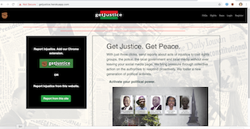

getJustice:
This webApp and Chrome Extension lets you report instances of injustice on social media to concerned authorities in 15 seconds. (JavaScript, Python, Django, Bootstrap, external SMTP email server) Click: More
Snip^pet:
 This web page provides users with frequently used code snippets for reuse in their applications.
(Python, JavaScript, REST API, Bulma, Django) Click: More
This web page provides users with frequently used code snippets for reuse in their applications.
(Python, JavaScript, REST API, Bulma, Django) Click: More
Sing Along:
 Here I use the iTunes API to let you listen to your favorite music from our cool web-site, your
own compu-radio. (JavaScript, API)
Click: More
Here I use the iTunes API to let you listen to your favorite music from our cool web-site, your
own compu-radio. (JavaScript, API)
Click: More
Pathfinder:
 If you want to find the best path through the
mountains, use my program! (Python)
Click: More
If you want to find the best path through the
mountains, use my program! (Python)
Click: More